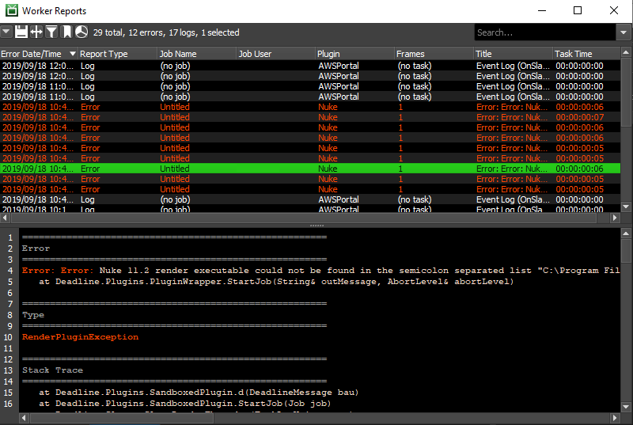
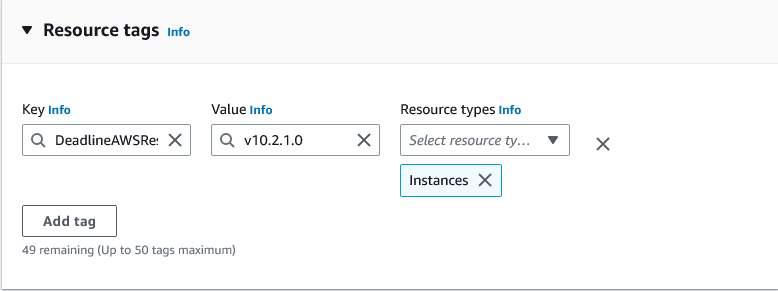

Worker Configuration¶
Overview¶
The Workers panel allows Workers to be controlled and modified using the right-click menu. Note that the availability of these options can vary depending on the context in which they are used, as well as the filters that are defined for the current user.
If the Workers panel is not visible, see the Panel Features documentation for instructions on how to create new panels in the Monitor.
Worker States¶
These are the states that a Worker can be in. They are color coded to make it clear which state the Worker is in.
Offline (gray): The Worker application is closed.
Idle (white): The Worker application is running, but it is not currently rendering.
Rendering (green): The Worker application is running, and is rendering a job.
Stalled (red): A Worker becomes stalled if it hasn’t updated its state for a certain amount of time. This could be because the machine crashed, or the Worker simply didn’t shutdown cleanly.
Disabled (yellow): The Worker has been disabled by an administrator. This prevents the Worker application from launching on the machine.
License Problems (orange) (DEPRECATED): Starting with Deadline 10.1.23, Deadline and its components do not require a license. For older versions, this means the Worker cannot acquire a license, or its temporary license is about to expire. You can check the License column in the Worker list to see what the problem is.
If you see a red Worker, it means the Worker has been marked as stalled. This happens if the Worker hasn’t updated its state for a certain amount of time. You can configure this amount of time in the Wait Times section of the Worker Settings in the Repository Configuration. When a Worker is marked as stalled, it usually means that the machine crashed, or that the Worker simply didn’t shutdown cleanly. In the latter case, you can simply mark the Worker as offline from the right-click menu.
The Worker panel’s right-click menu also gives the option to delete or disable Workers. When disabled, the Worker application will not be allowed to launch on the machine. This is useful if you are doing maintenance on a machine and you don’t want the Worker accidentally starting up on it.
Job Candidate Filter¶
Note
The Job Candidate Filter in the Workers panel can affect the performance of the Deadline Monitor if there are lots of Workers in the farm. We recommend using the new Job Render Candidates feature in the Jobs panel instead.
If a Worker isn’t rendering a job that you think it should be, you can use the Job Candidate Filter option in the Worker Panel’s drop down menu to try and figure out why. When the option is enabled, simply click on a job in the Job Panel and the Worker Panel will be filtered to only show the Workers that can render the selected job based on the job’s settings. The filtering takes the following into account:
The job’s pool and group (see the Pools and Groups documentation for more information).
The job’s allow list or deny list, and the allow list or deny list in the job’s assigned limits (see the Limits and Machine Limits documentation for more information).
If the Worker has been marked bad for the job (see the Job Failure Detection documentation for more information).
Worker Settings¶
Most of the Worker settings be configured from the Monitor while in Power User Mode (or with the proper user privileges) by right-clicking on one or more of them and selecting ‘Modify Worker Properties’. To configure Pools and Groups, you can use the Tools menu, or you can use the Worker panel’s right-click menu. See the Pools and Groups documentation for more information.

Note that the only settings here that have an actual impact on rendering are the Concurrent Tasks and CPU Affinity settings. Furthermore, the CPU Affinity feature is only supported on Windows and Linux operating systems, since macOS does not support process affinity.
General¶
These are some general Worker settings:
Worker Description: A description of the selected Worker. This can be used to provide some pertinent information about the Worker, such as certain system information.
Worker Comment: A short comment regarding the Worker. This can be used to inform other users why certain changes were made to that Worker’s settings, or of any known potential issues with that particular Worker.
Normalized Render Time Multiplier: This value is used to calculate the normalized render time of Tasks. For example, a Worker that normally takes twice as long to render a Task should be assigned a multiplier of 2.
Normalized Task Timeout Multiplier: This value is used to calculate the normalized render time of Task Timeouts. Typically, this should be the same value as above.
Concurrent Task Limit Override: The concurrent Task Limit for the Worker. If 0, the Worker’s CPU count is used as the limit.
Override Remote Command Port: If enabled, this port will be used by the Worker for remote commands instead of a random port.
Host Name/IP Address Override: Overrides the Host name/IP address for remote commands.
MAC Address Override: This is used to override the MAC Address associated with this Worker. This is useful in the event that the Worker defaults to a different MAC Address than the one needed for Wake On Lan.
Use ‘/tmp’ for Worker Data (Linux) (deprecated): If enabled, Workers will write their job and plugin info in the /tmp folder instead of the user folder (Linux only).
Note
The Use ‘/tmp’ for Worker Data (Linux) option will be ignored by workers upgraded to 10.1.11 and above. Please see Worker Local Data Storage if you wish to use a custom local data path.

Idle Detection¶
These settings can be used to override the global Worker Scheduling settings for the Worker (if there are any). It can be used to start the Worker when its machine becomes idle (based on keyboard and mouse activity), and stop the Worker when its machine is in use again. Note that Idle Detection is managed by the Launcher, so it must be running for this feature to work.
Start Worker When Machine Idle For: If enabled, the Worker will be started on the machine if it is idle. A machine is considered idle if there hasn’t been any keyboard, mouse or tablet activity for the specified amount of time.
Only Start Worker If CPU Usage Less Than: If enabled, the Worker will only be launched if the machine’s CPU usage is less than the specified value.
Only Start Worker If Memory Usage Less Than: If enabled, the Worker will only be launched if the machine’s memory usage is less than the specified value.
Only Start Worker If Free Memory More Than: If enabled, the Worker will only be launched if the machine has more free memory than the specified value (in Megabytes).
Only Start Worker If These Processes Are Not Running: If enabled, the Worker will only be launched if the specified processes are not running on the machine.
Only Start If Launcher Is Not Running As These Users: If enabled, the Worker will only be launched if the launcher is not running as one of the specified users.
Stop Worker When Machine Is No Longer Idle: If enabled, the Worker will be stopped when the machine is no longer idle. A machine is considered idle if there hasn’t been any keyboard, mouse or tablet activity for the specified amount of time.
Only Stop Worker If Started By Idle Detection: If enabled, the Worker will only be stopped when the machine is no longer idle if that Worker was originally started by Idle Detection. If the Worker was originally started manually, it will not be stopped.
Allow Worker To Finish Its Current Task When Stopping: If enabled, the Worker application will not be closed until it finishes its current Task.

There are some limitations with Idle Detection depending on the operating system:
On Windows, Idle Detection will NOT work if the Launcher is running as a service. This is because the service runs in an environment that is separate from the Desktop, and has no knowledge of any mouse or keyboard activity.
On Linux, the Launcher uses X11 to determine if there has been any mouse or keyboard activity. If X11 is not available, Idle Detection will NOT work. One such situation is when the launcher is run as a daemon.
Note that Idle Detection can be overridden in the Local Worker Controls so that users can configure if their local Worker should launch when the machine becomes idle.
Job Dequeuing¶
These setting are used to determine when a Worker can dequeue Jobs:
All Jobs: In this mode, the Worker will dequeue any job.
Only Jobs Submitted From This Worker’s Machine: In this mode, the Worker will only dequeue job submitted from the machine it’s running on.
Only Jobs Submitted From These Users: In this mode, the Worker will only dequeue job submitted from the specified users.

CPU Affinity¶
These settings affect the number of CPUs the Worker renders with (Windows and Linux only):
Override CPU Affinity: Enable this option to override which CPUs the Worker and its child processes are limited to.
Specify Number of CPUs to Use: Use this spinbox if you just want to limit the number of CPUs used, and you aren’t concerned with which specific CPUs are used.
- Check Individual CPUs to Use: Use these buttons, as well as the checkboxes beside each CPU, if you want to explicitly pick which CPUs are used. This is useful if you are running multiple Workers on the same machine and you want to give each of them their own set of CPUs.
Check All: Checks all the available CPUs.
Check None: Unchecks all the available CPUs.
Invert: Checks all unchecked CPUs and unchecks all checked CPUs.

GPU Affinity¶
These settings can affect the number of GPUs the Worker uses when rendering:
Override GPU Affinity: Enable this option to override which GPUs the rendering process is limited to. Note that not all renderers support this.
Specify Number of GPUs to Use: Use this spinbox if you just want to limit the number of GPUs used, and you aren’t concerned with which specific GPUs are used.
- Check Individual GPUs to Use: Use these buttons, as well as the checkboxes beside each GPU, if you want to explicitly pick which GPUs are used. This is useful if you are running multiple Workers on the same machine and you want to give each of them their own set of GPUs.
Check All: Checks all the available GPUs.
Check None: Unchecks all the available GPUs.
Invert: Checks all unchecked GPUs and unchecks all checked GPUs.
Note that Deadline currently cannot detect the number of GPUs a system has. Instead, it just assumes that there are no more than 16 GPUs. Make sure to configure the GPU affinity settings based on the number of GPUs the machine actually has.

Note that unlike CPU affinity, GPU affinity isn’t automatically applied to all renders. It is up to the individual Deadline application plugins to pull this information from the Worker’s at render time and pass them to the renderer.
If there is a certain Deadline plugin that you think the GPU affinity settings could be applied to, please visit the Thinkbox Help Centre and let us know.
Extra Info¶
Like jobs, extra arbitrary properties can also be set for Workers. If more extra arbitrary properties are needed, then new Extra Infos can be added with its own Key/Value Pair.

Only the Extra Info 0-9 properties can be renamed from the Workers section of the Repository Configuration, and have corresponding columns in the Worker list that can be sorted on. Any other Extra Infos added will have to be renamed from this panel.
Event Opt-Ins¶
Like jobs, Workers can choose to Opt into Event Plugins that are in the Opt-In state. Only Event Plugins in the Opt-In state will be visible to select in this panel and will only trigger for Workers that have Opted into them.

Worker Reports and History¶
All error reports for a Worker can be viewed in the Worker Reports panel. This panel can be opened from the View menu or from the main toolbar in the Monitor. It can also be opened from the Worker panel’s right-click menu.
You can use the Worker Report panel’s right-click menu to save reports as files to send to Deadline Support. You can also delete reports from this menu as well.
In addition to viewing Worker reports, you can also view the Worker’s history. The History window can be brought up from the Worker panel’s right-click menu by selecting the View Worker History option.

Remote Control¶
You can view the live log for Workers or control them remotely from the right-click menu. See the Remote Control documentation for more information.
AWS Worker Tagging¶
To communicate your Deadline version to AWS, Deadline Worker software running on EC2 instances, outside of AWS Portal, Spot Event Plugin, or RFDK; will attempt to add a tag when the worker initializes. This tag will have key as DeadlineAWSResource and the Deadline version as the value.
This will help AWS Thinkbox notify customers via the AWS Health Dashboard who are running versions of Deadline that have known issues, relevant fixes, or are no longer supported.
You can see if the Worker has successfully tagged itself by looking at the Worker panel in Deadline Monitor under the column Worker Tagged. It will be in one of the following states.
unknownThis is the status when the Worker boots and has yet to check if the EC2 instance has the appropriate tag.
untaggedThis is the status when the Worker EC2 instance does not have the version tracking tag. See Troubleshooting Untagged AWS Workers for more information.
taggedThis is the status when the Worker EC2 instance has the appropriate version tag.
taggingThis is the status when the Worker EC2 instance is in the process of applying the version tag to the EC2 instance.
Troubleshooting Untagged AWS Workers¶
If the Worker is in the untagged state and you would like to take advantage of this feature you can do the following.
Ensure that the VPC network your Workers are in have access to the EC2 endpoint.
Follow https://docs.aws.amazon.com/vpc/latest/privatelink/create-interface-endpoint.html#create-interface-endpoint-aws and add the
com.amazonaws.<region>.ec2service where<region>is the AWS region the VPC is in. For example, if the VPC was inus-west-2the service would becom.amazonaws.us-west-2.ec2.
Check the Worker logs for any occurrences of
Got Access Denied when trying to DescribeTagsorGot Access Denied when trying to CreateTags. Ensure that the Worker EC2 instances have the correct IAM policy attached to them.EC2 instances running the Worker need the following IAM policy attached so that Workers can determine if the EC2 instance that they are on have the version tag and so that Workers can tag the EC2 instance that they are on:
[ { "Effect": "Allow", "Action": "ec2:DescribeTags", "Resource": "*" }, { "Effect": "Allow", "Action": "ec2:CreateTags", "Resource": "arn:aws:ec2:<REGION>:<ACCOUNT>:instance/*", "Condition": { "ForAllValues:StringLike": { "aws:RequestTag/DeadlineAWSResource": [ "*" ] } } } ]
Tagging Workers on Start Up¶
As an alternative to having the Deadline Worker software add the tag on start up you can apply the tag before launching the Deadline Worker Software.
Do the following to add the version tag to your Worker EC2 instances:
Either create or modify the launch template that you will be using. See https://docs.aws.amazon.com/autoscaling/ec2/userguide/launch-templates.html, for more information on launch templates.
Go to the
Resource tagssection.Click
Add tag.Under
KeyinputDeadlineAWSResource.Under
Valueinputv<version>where<version>is the version of the Deadline Worker that will run on the EC2 instance.
Example:

{kind=link}